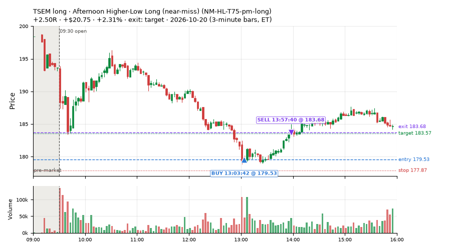
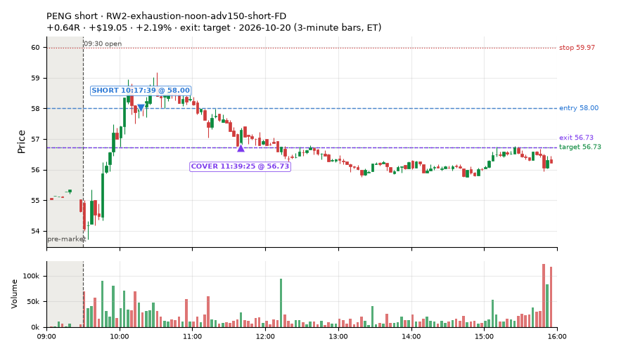
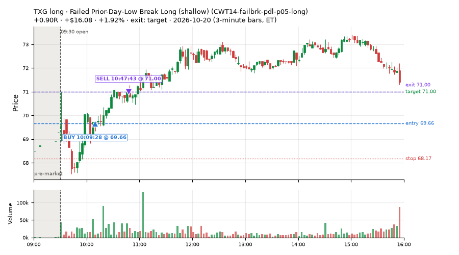
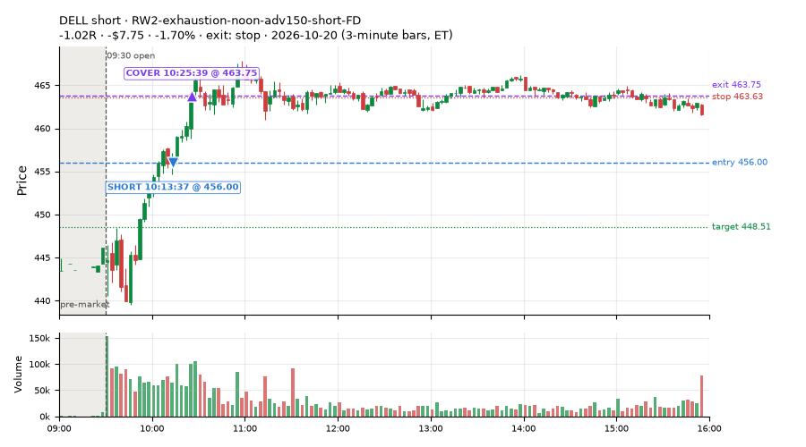
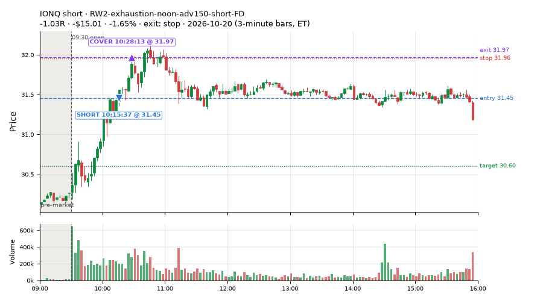
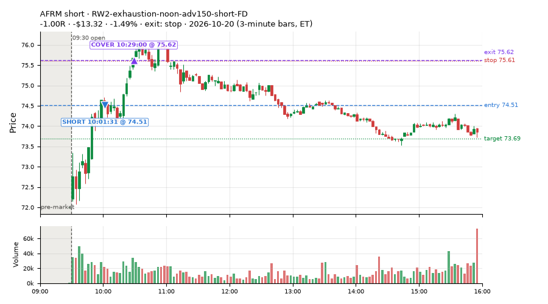
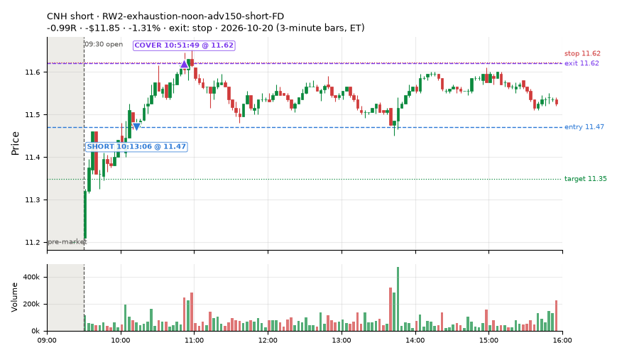
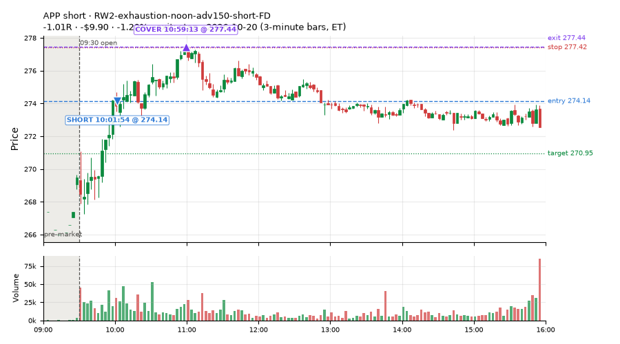

142 trades · win rate 76% · P/L $292.42
PROBATION: no live setup has passed both locked test periods. 10 owner-directed setups added 2026-10-08 (MarcoFlow top 5 + 5 new), untested live. RW6G1 (RW6 + VWAP band guard) added 2026-10-09, probation.

| Symbol | Setup | Side | In | Out | Entry | Exit | Exit reason | % gained | P/L |
|---|---|---|---|---|---|---|---|---|---|
| TSEM | Afternoon Higher-Low Long (near-miss) (NM-HL-T75-pm-long) | long | 13:03 | 13:57 | 179.53 | 183.68 | target | +2.31% | $20.75 |
| PENG | RW2-exhaustion-noon-adv150-short-FD | short | 10:17 | 11:39 | 58.00 | 56.73 | target | +2.19% | $19.05 |
| TXG | Failed Prior-Day-Low Break Long (shallow) (CWT14-failbrk-pdl-p05-long) | long | 10:09 | 10:47 | 69.66 | 71.00 | target | +1.92% | $16.08 |
| Symbol | Setup | Side | In | Out | Entry | Exit | Exit reason | % lost | P/L |
|---|---|---|---|---|---|---|---|---|---|
| DELL | RW2-exhaustion-noon-adv150-short-FD | short | 10:13 | 10:25 | 456.00 | 463.75 | stop | -1.70% | $-7.75 |
| IONQ | RW2-exhaustion-noon-adv150-short-FD | short | 10:15 | 10:28 | 31.45 | 31.97 | stop | -1.65% | $-15.01 |
| AFRM | RW2-exhaustion-noon-adv150-short-FD | short | 10:01 | 10:29 | 74.51 | 75.62 | stop | -1.49% | $-13.32 |
| CNH | RW2-exhaustion-noon-adv150-short-FD | short | 10:13 | 10:51 | 11.47 | 11.62 | stop | -1.31% | $-11.85 |
| APP | RW2-exhaustion-noon-adv150-short-FD | short | 10:01 | 10:59 | 274.14 | 277.44 | stop | -1.20% | $-9.90 |








Signal to fill: median 1s, 90th percentile 3s (142 trades). Bars close each minute; the order follows the bar close.
Best excursion (MFE): median 0.45R; worst (MAE) median 0.22R. 27% of trades never got +0.25R in our favour; 0 reached +1R and still closed at or below 0.
| Symbol | Setup | Best R | Worst R | Closed R |
|---|---|---|---|---|
| MAR | CWT14-failbrk-pdh-p10-short | +0.03 | -3.05 | -3.46 |
| TJX | CWT14-failbrk-orl-p05-lowvol-long | +0.89 | -1.23 | -1.55 |
| TJX | CWT14-failbrk-orl-p05-long | +0.89 | -1.23 | -1.54 |
| CVS | RW2-exhaustion-noon-adv150-short-FD | +0.64 | -1.01 | -1.01 |
| M | CWT14-failbrk-orl-p05-lowvol-long | +0.26 | -1.03 | -1.29 |
| Entry time | Trades | Win | Avg R | P/L |
|---|---|---|---|---|
| 09:50-10:30 | 102 | 75% | +0.17 | $172.50 |
| 10:30-11:30 | 1 | 100% | +0.34 | $1.15 |
| 11:30-13:00 | 28 | 82% | +0.40 | $86.19 |
| 13:00-14:00 | 7 | 71% | +0.38 | $27.90 |
| 14:00-16:00 | 4 | 75% | +0.10 | $4.68 |
| Setup | Trades | Win | Avg R | Adj R (net of SPY) | P/L |
|---|---|---|---|---|---|
| Backside VWAP-Test Short (CWT04-backside-vwaptest-a15-short) | 3.0 | 67% | +0.26 | +0.10 | $3.47 |
| Coil Under the High (4 bars) (CWT12-coil-k4-long) | 1.0 | 100% | +0.34 | +1.13 | $1.15 |
| Stretched Below VWAP Bounce (CWT13-vwapstretch-z05-long) | 2.0 | 100% | +0.24 | +0.14 | $4.80 |
| Stretched Above VWAP Fade (CWT13-vwapstretch-z05-short) | 3.0 | 67% | +0.46 | +0.44 | $9.01 |
| Failed Opening-Range-Low Break Long (0.05 ATR) [fill] (CWT14-failbrk-orl-p05-long) | 4.0 | 0% | -1.26 | -1.41 | $-22.90 |
| Failed Opening-Range-Low Break Long (0.05 ATR, low volume) [fill] (CWT14-failbrk-orl-p05-lowvol-long) | 4.0 | 0% | -1.27 | -1.42 | $-23.02 |
| Failed Opening-Range-Low Break Long (0.1 ATR) [fill] (CWT14-failbrk-orl-p10-long) | 1.0 | 100% | +0.54 | +0.37 | $3.08 |
| Failed Opening-Range-Low Break Long (low volume) (CWT14-failbrk-orl-p10-lowvol-long) | 1.0 | 100% | +0.54 | +0.37 | $3.08 |
| Failed Prior-Day-High Break Short (0.05 ATR, low volume) [fill] (CWT14-failbrk-pdh-p05-lowvol-short) | 10.0 | 50% | -0.26 | -0.32 | $-24.28 |
| Failed Prior-Day-High Break Short (low volume) (CWT14-failbrk-pdh-p10-lowvol-short) | 3.0 | 33% | -0.68 | -0.55 | $-11.95 |
| Failed Prior-Day-High Break Short (0.1 ATR) [fill] (CWT14-failbrk-pdh-p10-short) | 10.0 | 80% | -0.07 | +0.05 | $14.08 |
| Failed Prior-Day-Low Break Long (shallow) (CWT14-failbrk-pdl-p05-long) | 38.0 | 95% | +0.44 | +0.16 | $148.66 |
| Failed Prior-Day-Low Break Long (0.05 ATR, low volume) [fill] (CWT14-failbrk-pdl-p05-lowvol-long) | 14.0 | 93% | +0.68 | +0.60 | $55.00 |
| Failed Prior-Day-Low Break Long (CWT14-failbrk-pdl-p10-long) | 25.0 | 96% | +0.63 | +0.38 | $132.97 |
| Failed Prior-Day-Low Break Long (0.1 ATR, low volume) [fill] (CWT14-failbrk-pdl-p10-lowvol-long) | 5.0 | 100% | +1.21 | +0.89 | $35.57 |
| Opening-Range Low Sweep Reversal (LIQ-orl-sweep-open15-s25-long) | 1.0 | 0% | -0.09 | -0.06 | $-0.93 |
| Afternoon Higher-Low Long (near-miss) (NM-HL-T75-pm-long) | 1.0 | 100% | +2.50 | +2.35 | $20.75 |
| RW2-exhaustion-noon-adv150-short-FD | 15.0 | 33% | -0.54 | -0.35 | $-62.30 |
| Midday Gap-Up Dip Buy (heat_fade_long) failed Apr-Jun holdout: -0.138R/trade over 1043 trades | 1.0 | 100% | +0.69 | +0.57 | $6.18 |
Market direction (SPY, beta 1) accounted for $67.35 of today's $292.42; the rest ($225.07) came from the setups themselves. Avg R net of SPY: +0.10 (incl. a hedge leg's cost; report only).
45 setups live today. Today: 259 signals, 142 taken, 4 lost because another setup held the symbol (2%). Since 2026-10-12 (7 sessions): 5815 signals, 2732 taken, 594 lost to other setups (10%). Peak open positions today 42 of 400 slots. Earnings blackout removed 412 symbols before scanning.
Simulated playing time (not live): 3075 what-if trades of signals not taken, avg -0.12R, 58% winners; of them 594 lost to another setup (avg -0.17R).
Silent: CWT04-backside-lh-a25-short, CWT04-backside-vwaptest-a25-short
| Prio | Setup | Today sig / taken | Sessions | Signals / taken / trades | Taken/day | Expected/day | Lost to other setups | Lost to (setup n) | Top skip reasons | SIMULATED: not-taken n / avg R / win | Verdict |
|---|---|---|---|---|---|---|---|---|---|---|---|
| 1 | Monday Weak-RS NS3 Short (near-miss) NM-RWN5-ns3-mon-weakrs-short | 0 / 0 | 2 | 6 / 5 / 5 | 2.50 | – | 0 | – | spread / quote / size 1 | 1 / -1.02R / 0% | slow 12.5 entries/week; ~5 weeks to 60 trades |
| 2 | Early NS3 Short While QQQ Up (near-miss) NM-RWR3-ns3-qqqup-early-short | 0 / 0 | 2 | 3 / 2 / 2 | 1.00 | – | 0 | – | spread / quote / size 1 | 1 / -1.02R / 0% | slow 5.0 entries/week; ~12 weeks to 60 trades |
| 3 | Early NS3 Short While SPY Up (near-miss) NM-RWN3-ns3-spyup-early-short | 0 / 0 | 2 | 3 / 2 / 2 | 1.00 | – | 0 | – | spread / quote / size 1 | 1 / -1.02R / 0% | slow 5.0 entries/week; ~12 weeks to 60 trades |
| 4 | Late-Day ETF Dip Buy (near-miss) NM-ETF-late-dip-di-long | 0 / 0 | 2 | 1 / 1 / 1 | 0.50 | – | 0 | – | – | 0 / – | slow 2.5 entries/week; ~24 weeks to 60 trades |
| 5 | NS2 Up-3 Short, QQQ Up, Slope Down (near-miss) NM-RWR4-ns2-up3-qqqup-slopedn-short | 0 / 0 | 2 | 0 / 0 / 0 | 0.00 | – | 0 | – | – | 0 / – | quiet - wait no signals in 2 session(s); too early to tell |
| 6 | Afternoon Exhaustion Short, Gap-Down, SPY Up (near-miss) NM-RWR1-exh150-gapdn-spyup-pm-short | 0 / 0 | 2 | 0 / 0 / 0 | 0.00 | – | 0 | – | – | 0 / – | quiet - wait no signals in 2 session(s); too early to tell |
| 7 | NS2 Short, SPY Up 0.5%, Not Friday (near-miss) NM-RWN4-ns2-spyup05-notfri-short | 0 / 0 | 2 | 0 / 0 / 0 | 0.00 | – | 0 | – | – | 0 / – | quiet - wait no signals in 2 session(s); too early to tell |
| 8 | Gap-Down Capitulation Buy (near-miss) NM-AR-AM-gapdown-capitulation-long | 0 / 0 | 2 | 0 / 0 / 0 | 0.00 | – | 0 | – | – | 0 / – | quiet - wait no signals in 2 session(s); too early to tell |
| 9 | Quiet Downtrend Bounce Short (near-miss) NM-AMS-N1-quiet-morning-short | 0 / 0 | 2 | 0 / 0 / 0 | 0.00 | – | 0 | – | – | 0 / – | quiet - wait no signals in 2 session(s); too early to tell |
| 10 | Gap-Down Reclaim Fade, Afternoon (near-miss) NM-PM-gapdn-above-pdh-rvol-short | 0 / 0 | 2 | 0 / 0 / 0 | 0.00 | – | 0 | – | – | 0 / – | quiet - wait no signals in 2 session(s); too early to tell |
| 11 | Gap-Down VWAP Loss Short, Slope Filter (near-miss) NM1-cwt09-g10-vwaploss-short | 0 / 0 | 2 | 0 / 0 / 0 | 0.00 | – | 0 | – | – | 0 / – | quiet - wait no signals in 2 session(s); too early to tell |
| 12 | Afternoon Higher-Low Long (near-miss) NM-HL-T75-pm-long | 1 / 1 | 2 | 7 / 7 / 7 | 3.50 | – | 0 | – | – | 0 / – | ok 17.5 entries/week |
| 13 | Backside Lower-High Short (big runner) CWT04-backside-lh-a25-short | 0 / 0 | 7 | 0 / 0 / 0 | 0.00 | – | 0 | – | – | 0 / – | silent no signals in 7 session(s); no expected rate on file |
| 14 | Backside VWAP-Test Short (big runner) CWT04-backside-vwaptest-a25-short | 0 / 0 | 7 | 0 / 0 / 0 | 0.00 | – | 0 | – | – | 0 / – | silent no signals in 7 session(s); no expected rate on file |
| 15 | Gap-Down VWAP Loss Short (10% gap) CWT09-gapdn-vwaploss-g10-short | 0 / 0 | 7 | 27 / 2 / 2 | 0.29 | – | 0 | – | not shortable / shorts off 23, daily loss cap 1, spread / quote / size 1 | 25 / -0.30R / 40% | slow 1.4 entries/week; ~42 weeks to 60 trades |
| 16 | Panic Flush Reversal (deep, 5x volume) CWT05-flush-m075-v5-long | 0 / 0 | 7 | 5 / 3 / 3 | 0.43 | – | 0 | – | daily loss cap 2 | 2 / +0.52R / 100% | slow 2.1 entries/week; ~28 weeks to 60 trades |
| 17 | Gap-Down Bounce Rejection Short (10% gap) CWT09-gapdn-bounce-g10-lowerhalf-short | 0 / 0 | 7 | 44 / 4 / 4 | 0.57 | – | 0 | – | not shortable / shorts off 38, spread / quote / size 1, broker rejected 1 | 40 / -0.82R / 10% | slow 2.9 entries/week; ~21 weeks to 60 trades |
| 18 | Backside Lower-High Short CWT04-backside-lh-a15-short | 0 / 0 | 7 | 3 / 1 / 1 | 0.14 | – | 0 | – | daily loss cap 1, spread / quote / size 1 | 2 / -0.05R / 50% | slow 0.7 entries/week; ~84 weeks to 60 trades |
| 19 | Panic Flush Reversal (5x volume) CWT05-flush-m05-v5-long | 0 / 0 | 7 | 8 / 4 / 4 | 0.57 | – | 1 | CWT14-failbrk-orl-p10-long 1 | daily loss cap 2, symbol held by another setup 1, spread / quote / size 1 | 4 / +0.58R / 100% | slow 2.9 entries/week; ~21 weeks to 60 trades |
| 20 | Panic Flush Reversal (deep, 3x volume) CWT05-flush-m075-v3-long | 0 / 0 | 7 | 12 / 8 / 8 | 1.14 | – | 0 | – | daily loss cap 3, broker rejected 1 | 4 / +0.46R / 100% | slow 5.7 entries/week; ~11 weeks to 60 trades |
| 21 | Spike-Pullback Flag Breakout CWT12-flag-s1-long | 0 / 0 | 7 | 11 / 7 / 7 | 1.00 | – | 0 | – | daily loss cap 2, spread / quote / size 1, broker rejected 1 | 4 / -0.16R / 75% | slow 5.0 entries/week; ~12 weeks to 60 trades |
| 22 | Backside VWAP-Test Short CWT04-backside-vwaptest-a15-short | 3 / 3 | 7 | 9 / 6 / 6 | 0.86 | – | 0 | – | daily loss cap 1, not shortable / shorts off 1, spread / quote / size 1 | 3 / +2.10R / 100% | slow 4.3 entries/week; ~14 weeks to 60 trades |
| 23 | Stretched Above VWAP Fade (far) CWT13-vwapstretch-z075-short | 1 / 0 | 7 | 15 / 2 / 2 | 0.29 | – | 0 | – | not shortable / shorts off 8, daily loss cap 4, spread / quote / size 1 | 13 / -0.58R / 23% | slow 1.4 entries/week; ~42 weeks to 60 trades |
| 24 | Gap-Down VWAP Loss Short (5% gap) CWT09-gapdn-vwaploss-g5-short | 6 / 0 | 7 | 160 / 29 / 29 | 4.14 | – | 2 | CWT14-failbrk-orl-p05-long 2, CWT14-failbrk-orl-p10-long 1 | not shortable / shorts off 103, spread / quote / size 17, daily loss cap 9 | 131 / -0.32R / 27% | ok 20.7 entries/week |
| 25 | Panic Flush Reversal (3x volume) CWT05-flush-m05-v3-long | 0 / 0 | 7 | 28 / 10 / 11 | 1.43 | – | 5 | CWT05-flush-m075-v3-long 4, CWT05-flush-m075-v5-long 3, CWT05-flush-m05-v5-long 3 | daily loss cap 11, symbol held by another setup 5, spread / quote / size 1 | 18 / -0.08R / 61% | slow 7.1 entries/week; ~8 weeks to 60 trades |
| 26 | Gap-Down Bounce Rejection Short (5% gap) CWT09-gapdn-bounce-g5-lowerhalf-short | 2 / 0 | 7 | 176 / 42 / 42 | 6.00 | – | 3 | CWT09-gapdn-bounce-g10-lowerhalf-short 2, CWT09-gapdn-vwaploss-g10-short 1, CWT09-gapdn-vwaploss-g5-short 1 | not shortable / shorts off 110, spread / quote / size 16, symbol held by another setup 3 | 134 / +0.23R / 35% | ok 30.0 entries/week |
| 27 | Stretched Below VWAP Bounce (far) CWT13-vwapstretch-z075-long | 0 / 0 | 7 | 38 / 8 / 8 | 1.14 | – | 0 | – | daily loss cap 28, spread / quote / size 2 | 30 / -0.38R / 40% | slow 5.7 entries/week; ~11 weeks to 60 trades |
| 28 | Stretched Above VWAP Fade CWT13-vwapstretch-z05-short | 4 / 3 | 7 | 98 / 49 / 49 | 7.00 | – | 0 | – | daily loss cap 29, not shortable / shorts off 14, spread / quote / size 6 | 49 / -0.81R / 12% | ok 35.0 entries/week |
| 29 | Coil Under the High (6 bars) CWT12-coil-k6-long | 0 / 0 | 7 | 94 / 42 / 42 | 6.00 | – | 20 | CWT12-coil-k4-long 18, CWT14-failbrk-orl-p05-lowvol-long 1, CWT14-failbrk-orl-p05-long 1 | spread / quote / size 26, symbol held by another setup 20, daily loss cap 5 | 52 / -0.65R / 17% | ok 30.0 entries/week |
| 30 | Stretched Below VWAP Bounce CWT13-vwapstretch-z05-long | 2 / 2 | 7 | 185 / 27 / 27 | 3.86 | – | 1 | CWT14-failbrk-pdh-p05-lowvol-short 1 | daily loss cap 152, spread / quote / size 5, symbol held by another setup 1 | 157 / -0.13R / 60% | ok 19.3 entries/week |
| 31 | Failed Prior-Day-High Break Short (low volume) CWT14-failbrk-pdh-p10-lowvol-short | 9 / 3 | 7 | 160 / 90 / 90 | 12.86 | – | 8 | CWT14-failbrk-orl-p10-lowvol-long 3, CWT14-failbrk-pdh-p10-short 2, CWT14-failbrk-pdh-p05-lowvol-short 2 | spread / quote / size 42, daily loss cap 10, symbol held by another setup 8 | 70 / +0.13R / 77% | ok 64.3 entries/week |
| 32 | Failed Prior-Day-Low Break Long (0.1 ATR, low volume) [fill] CWT14-failbrk-pdl-p10-lowvol-long | 7 / 5 | 7 | 145 / 94 / 94 | 13.43 | – | 7 | CWT14-failbrk-pdl-p10-long 3, CWT14-failbrk-pdl-p05-lowvol-long 2, CWT09-gapdn-bounce-g5-lowerhalf-short 1 | spread / quote / size 30, daily loss cap 12, symbol held by another setup 7 | 50 / -0.07R / 66% | ok 67.1 entries/week |
| 33 | Failed Prior-Day-High Break Short (0.1 ATR) [fill] CWT14-failbrk-pdh-p10-short | 22 / 10 | 7 | 299 / 168 / 168 | 24.00 | – | 25 | CWT14-failbrk-pdh-p10-lowvol-short 19, CWT14-failbrk-orl-p10-lowvol-long 3, CWT14-failbrk-pdh-p05-lowvol-short 2 | spread / quote / size 73, symbol held by another setup 25, not shortable / shorts off 17 | 131 / +0.05R / 74% | ok 120.0 entries/week |
| 34 | Failed Opening-Range-Low Break Long (low volume) CWT14-failbrk-orl-p10-lowvol-long | 2 / 1 | 7 | 318 / 177 / 177 | 25.29 | – | 13 | CWT14-failbrk-pdl-p10-lowvol-long 4, CWT14-failbrk-orl-p05-lowvol-long 3, CWT14-failbrk-orl-p05-long 2 | daily loss cap 50, spread / quote / size 50, broker rejected 15 | 141 / +0.01R / 70% | ok 126.4 entries/week |
| 35 | Failed Prior-Day-Low Break Long CWT14-failbrk-pdl-p10-long | 42 / 25 | 7 | 313 / 200 / 200 | 28.57 | – | 20 | CWT14-failbrk-pdl-p10-lowvol-long 15, CWT14-failbrk-pdl-p05-lowvol-long 4, CWT14-failbrk-pdl-p05-long 2 | spread / quote / size 54, daily loss cap 26, symbol held by another setup 20 | 112 / -0.07R / 64% | ok 142.9 entries/week |
| 36 | Failed Opening-Range-Low Break Long (0.1 ATR) [fill] CWT14-failbrk-orl-p10-long | 3 / 1 | 7 | 422 / 193 / 193 | 27.57 | – | 55 | CWT14-failbrk-orl-p10-lowvol-long 43, CWT14-failbrk-orl-p05-lowvol-long 9, CWT14-failbrk-pdl-p10-lowvol-long 8 | spread / quote / size 63, symbol held by another setup 55, daily loss cap 51 | 228 / -0.06R / 67% | ok 137.9 entries/week |
| 37 | Failed Prior-Day-High Break Short (0.05 ATR, low volume) [fill] CWT14-failbrk-pdh-p05-lowvol-short | 22 / 10 | 7 | 337 / 188 / 188 | 26.86 | – | 34 | CWT14-failbrk-pdh-p10-lowvol-short 21, CWT14-failbrk-orl-p05-lowvol-long 5, CWT14-failbrk-pdh-p10-short 3 | spread / quote / size 66, daily loss cap 37, symbol held by another setup 34 | 149 / -0.01R / 69% | ok 134.3 entries/week |
| 38 | Failed Prior-Day-Low Break Long (0.05 ATR, low volume) [fill] CWT14-failbrk-pdl-p05-lowvol-long | 19 / 14 | 7 | 322 / 188 / 188 | 26.86 | – | 27 | CWT14-failbrk-pdl-p10-lowvol-long 17, CWT14-failbrk-pdl-p10-long 13, CWT14-failbrk-pdl-p05-long 7 | spread / quote / size 62, daily loss cap 40, symbol held by another setup 27 | 132 / -0.05R / 64% | ok 134.3 entries/week |
| 39 | Coil Under the High (4 bars) CWT12-coil-k4-long | 4 / 1 | 7 | 266 / 173 / 173 | 24.71 | – | 4 | CWT14-failbrk-pdl-p05-lowvol-long 1, CWT14-failbrk-pdl-p10-lowvol-long 1, CWT14-failbrk-pdh-p05-lowvol-short 1 | per-setup cap 41, spread / quote / size 28, daily loss cap 19 | 93 / -0.05R / 63% | ok 123.6 entries/week |
| 40 | Failed Prior-Day-Low Break Long (shallow) CWT14-failbrk-pdl-p05-long | 62 / 38 | 7 | 559 / 269 / 269 | 38.43 | – | 107 | CWT14-failbrk-pdl-p05-lowvol-long 73, CWT14-failbrk-pdl-p10-long 61, CWT14-failbrk-pdl-p10-lowvol-long 54 | symbol held by another setup 107, spread / quote / size 101, daily loss cap 69 | 289 / -0.08R / 64% | ok 192.1 entries/week |
| 41 | Failed Opening-Range-Low Break Long (0.05 ATR, low volume) [fill] CWT14-failbrk-orl-p05-lowvol-long | 9 / 4 | 7 | 714 / 351 / 351 | 50.14 | – | 65 | CWT14-failbrk-orl-p10-lowvol-long 31, CWT14-failbrk-orl-p10-long 11, CWT14-failbrk-orl-p05-long 11 | daily loss cap 122, spread / quote / size 84, symbol held by another setup 65 | 363 / -0.09R / 65% | ok 250.7 entries/week |
| 42 | Failed Opening-Range-Low Break Long (0.05 ATR) [fill] CWT14-failbrk-orl-p05-long | 13 / 4 | 7 | 1001 / 363 / 363 | 51.86 | – | 197 | CWT14-failbrk-orl-p05-lowvol-long 126, CWT14-failbrk-orl-p10-lowvol-long 103, CWT14-failbrk-orl-p10-long 98 | symbol held by another setup 197, daily loss cap 165, per-setup cap 129 | 637 / -0.21R / 57% | ok 259.3 entries/week |
| 43 | Midday Gap-Up Dip Buy heat_fade_long | 1 / 1 | 1 | 1 / 1 / 1 | 1.00 | 30.36 | 0 | – | – | 0 / – | watch 1.00 entries/day vs ~30.36 expected |
| 44 | RW2-exhaustion-noon-adv150-short-FD RW2-exhaustion-noon-adv150-short-FD | 23 / 15 | 1 | 23 / 15 / 15 | 15.00 | 50.34 | 0 | – | spread / quote / size 5, not shortable / shorts off 2, daily loss cap 1 | 8 / -0.23R / 50% | ok 75.0 entries/week |
| 45 | Opening-Range Low Sweep Reversal LIQ-orl-sweep-open15-s25-long | 2 / 1 | 1 | 2 / 1 / 1 | 1.00 | – | 0 | – | spread / quote / size 1 | 1 / -0.18R / 0% | slow 5.0 entries/week; ~12 weeks to 60 trades |
Every trade is attached as a CSV you can open and edit in Excel or Google Sheets. Live page: https://misiti15.github.io/MCF/live/